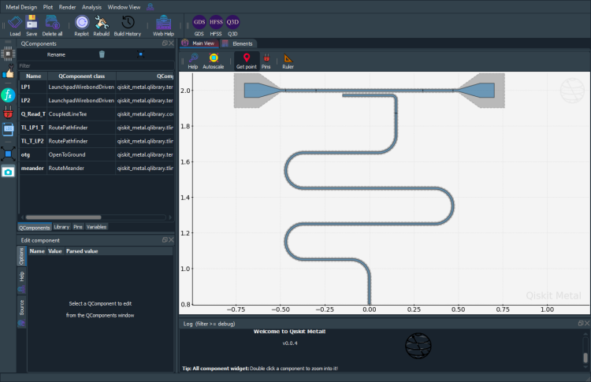

Note
This page was generated from tut/4-Analysis/4.17-Fit-S21-of-Hanger-Resonator-Geometry.ipynb.
4.17 S21 simulation and fitting of a resonator¶
Authors: Samarth Hawaldar, Arvind Mamgain
Adapted from tutorial 4.16
💡 Using this tutorial without the Qt GUI
This tutorial uses the desktop
MetalGUI. To follow along on Colab, Binder, JupyterHub, or any environment where Qt isn’t available, replace any ``gui.rebuild()`` / ``gui.screenshot()`` call with ``qm.view(design)`` — it renders the design to a matplotlibFigureyou can display inline or save withfig.savefig(...).See 1.4 Headless quick view for a complete runnable walkthrough and
`docs/headless-usage.rst<../../../docs/headless-usage.rst>`__ for the full reference.
[1]:
# Import useful packages
import qiskit_metal as metal
from qiskit_metal import designs, draw
from qiskit_metal import MetalGUI, Dict, open_docs
from qiskit_metal.toolbox_metal import math_and_overrides
from qiskit_metal.qlibrary.core import QComponent
from collections import OrderedDict
# To create plots after geting solution data.
import matplotlib.pyplot as plt
import numpy as np
# Packages for the simple design
from qiskit_metal.qlibrary.tlines.meandered import RouteMeander
from qiskit_metal.qlibrary.tlines.pathfinder import RoutePathfinder
from qiskit_metal.qlibrary.terminations.launchpad_wb_driven import (
LaunchpadWirebondDriven,
)
from qiskit_metal.qlibrary.terminations.open_to_ground import OpenToGround
from qiskit_metal.qlibrary.terminations.short_to_ground import ShortToGround
from qiskit_metal.qlibrary.couplers.coupled_line_tee import CoupledLineTee
# Analysis
# from qiskit_metal.renderers.renderer_gds.gds_renderer import QGDSRenderer
# from qiskit_metal.analyses.quantization import EPRanalysis
from qiskit_metal.analyses.quantization import EPRanalysis
from qiskit_metal.analyses.simulation import ScatteringImpedanceSim
from qiskit_metal.analyses.sweep_and_optimize.sweeping import Sweeping
import pyEPR as epr
[2]:
import numpy as np
Set up the design¶
[3]:
# Set up chip dimensions
design = designs.DesignPlanar()
design._chips["main"]["size"]["size_x"] = "9mm"
design._chips["main"]["size"]["size_y"] = "9mm"
design._chips["main"]["size"]["size_z"] = "-280um"
# Resonator and feedline gap width (W) and center conductor width (S) from reference 2
design.variables["cpw_width"] = "10 um" # S from reference 2
design.variables["cpw_gap"] = "6 um" # W from reference 2
design.overwrite_enabled = True
hfss = design.renderers.hfss
# Open GUI
gui = MetalGUI(design)
[4]:
# Define for renderer
eig_qres = EPRanalysis(design, "hfss")
# hfss = design.renderers.hfss
hfss = eig_qres.sim.renderer
q3d = design.renderers.q3d
Define the geometry¶
Here we will have a single feedline couple to a single CPW resonator.
The lauchpad should be included in the driven model simulations.
For that reason, we use the LaunchpadWirebondDriven component which has an extra pin for input/output
[5]:
###################
# Single feedline #
###################
# Driven Lauchpad 1
x = "-0.5mm"
y = "2.0mm"
launch_options = dict(
chip="main", pos_x=x, pos_y=y, orientation="360", lead_length="30um"
)
LP1 = LaunchpadWirebondDriven(design, "LP1", options=launch_options)
# Driven Launchpad 2
x = "0.5mm"
y = "2.0mm"
launch_options = dict(
chip="main", pos_x=x, pos_y=y, orientation="180", lead_length="30um"
)
LP2 = LaunchpadWirebondDriven(design, "LP2", options=launch_options)
# coupling resonator to feedline
q_read = CoupledLineTee(
design,
"Q_Read_T",
options=dict(
pos_x="0.0mm",
pos_y="2mm",
orientation="0",
coupling_space="6um",
coupling_length="300um",
open_termination=False,
),
)
gui.rebuild()
[6]:
# Using path finder to connect the two launchpads
TL_LP1_T = RoutePathfinder(
design,
"TL_LP1_T",
options=dict(
chip="main",
trace_width="10um",
trace_gap="6um",
fillet="99um",
hfss_wire_bonds=True,
lead=dict(end_straight="0.1mm"),
pin_inputs=Dict(
start_pin=Dict(component="LP1", pin="tie"),
end_pin=Dict(component="Q_Read_T", pin="prime_start"),
),
),
)
TL_T_LP2 = RoutePathfinder(
design,
"TL_T_LP2",
options=dict(
chip="main",
trace_width="10um",
trace_gap="6um",
fillet="99um",
hfss_wire_bonds=True,
lead=dict(end_straight="0.1mm"),
pin_inputs=Dict(
start_pin=Dict(component="Q_Read_T", pin="prime_end"),
end_pin=Dict(component="LP2", pin="tie"),
),
),
)
# # Rebuild the GUI
[7]:
######################
# lambda/4 resonator #
######################
# First we define the two end-points
otg = OpenToGround(
design,
"otg",
options=dict(chip="main", pos_x="0.0mm", pos_y="0.8mm", orientation="-90"),
)
# Use RouteMeander to fix the total length of the resonator
rt_meander = RouteMeander(
design,
"meander",
Dict(
trace_width="10um",
trace_gap="6um",
total_length="3.7mm",
hfss_wire_bonds=True,
fillet="99 um",
lead=dict(start_straight="250um"),
pin_inputs=Dict(
start_pin=Dict(component="otg", pin="open"),
end_pin=Dict(component="Q_Read_T", pin="second_end"),
),
),
)
# rebuild the GUI
gui.rebuild()
[8]:
gui.autoscale()
gui.screenshot()

Scattering Analysis¶
[27]:
from qiskit_metal.analyses.simulation import ScatteringImpedanceSim
em1 = ScatteringImpedanceSim(design, "hfss")
[28]:
design_name = "Sweep_DrivenModal"
qcomp_render = [] # Means to render everything in qgeometry table.
open_terminations = []
# Here, pin LP1_in and LP2_in are converted into lumped ports,
# each with an impedance of 50 Ohms. <br>
port_list = [("LP1", "in", 50), ("LP2", "in", 50)]
box_plus_buffer = True
[47]:
em1.setup.name = "Sweep_DrivenModal_setup"
em1.setup.freq_ghz = 6.0 # Try to keep this at the center of the swept frequency range for 'fast' sweeps and at the largest frequency for interpolating sweep for the best results
em1.setup.max_delta_s = 0.005 # This is necessary to get good results if interpolating sweep is not working for you
em1.setup.max_passes = 18
em1.setup.min_passes = 2
em1.setup.basis_order = -1 # Mixed order
em1.setup
[47]:
{'name': 'Sweep_DrivenModal_setup',
'reuse_selected_design': True,
'reuse_setup': True,
'freq_ghz': 6.0,
'max_delta_s': 0.005,
'max_passes': 18,
'min_passes': 2,
'min_converged': 1,
'pct_refinement': 30,
'basis_order': -1,
'vars': {'Lj': '10 nH', 'Cj': '0 fF'},
'sweep_setup': {'name': 'Sweep',
'start_ghz': 4.0,
'stop_ghz': 8.0,
'count': 10001,
'step_ghz': None,
'type': 'Fast',
'save_fields': False}}
[30]:
# we use HFSS as rendere
hfss = em1.renderer
hfss.start()
INFO 10:38AM [connect_project]: Connecting to Ansys Desktop API...
INFO 10:38AM [load_ansys_project]: Opened Ansys App
INFO 10:38AM [load_ansys_project]: Opened Ansys Desktop v2021.1.0
INFO 10:38AM [load_ansys_project]: Opened Ansys Project
Folder: C:/Users/QTLAB/Kunal/OneDrive - Indian Institute of Science/Documents/Ansoft/Directory/
Project: Project7
INFO 10:38AM [connect_design]: Opened active design
Design: Design_hfss [Solution type: DrivenModal]
INFO 10:38AM [get_setup]: Opened setup `Setup` (<class 'pyEPR.ansys.HfssDMSetup'>)
INFO 10:38AM [connect]: Connected to project "Project7" and design "Design_hfss" 😀
[30]:
True
[31]:
# set buffer
hfss.options["x_buffer_width_mm"] = 0.1
hfss.options["y_buffer_width_mm"] = 0.1
[32]:
# clean the design if needed
hfss.clean_active_design()
[42]:
# render the design
em1._render(
selection=[],
solution_type="drivenmodal",
vars_to_initialize=em1.setup.vars,
open_pins=open_terminations,
port_list=port_list,
box_plus_buffer=box_plus_buffer,
)
INFO 10:42AM [connect_design]: Opened active design
Design: Design_hfss [Solution type: DrivenModal]
[42]:
'Design_hfss'
[48]:
# for accurate simulations, make sure the mesh is fine enough for the meander
hfss.modeler.mesh_length("cpw_mesh", ["trace_meander"], MaxLength="0.05mm")
Broad sweet to find the resonance¶
[49]:
em1.setup.sweep_setup.start_ghz = 4.0
em1.setup.sweep_setup.stop_ghz = 8.0
em1.setup.sweep_setup.count = 10001
em1.setup.sweep_setup.type = "Fast"
em1._analyze() # This is necessary to keep the changes made to max_delta_s and min_passes
INFO 10:45AM [get_setup]: Opened setup `Sweep_DrivenModal_setup` (<class 'pyEPR.ansys.HfssDMSetup'>)
INFO 10:45AM [get_setup]: Opened setup `Sweep_DrivenModal_setup` (<class 'pyEPR.ansys.HfssDMSetup'>)
INFO 10:45AM [analyze]: Analyzing setup Sweep_DrivenModal_setup : Sweep
[50]:
hfss.plot_params(["S21"])
# make sure that you can see a dip in S21. If not, change the frequency sweep region or decrease the MaxLength of the mesh and retry.
# Or you can even try an interpolating sweep
[50]:
( S11 S21
4.0000 -0.000222-0.000797j -0.944088+0.329694j
4.0004 -0.000223-0.000797j -0.944077+0.329725j
4.0008 -0.000223-0.000797j -0.944065+0.329757j
4.0012 -0.000223-0.000797j -0.944054+0.329789j
4.0016 -0.000223-0.000798j -0.944043+0.329821j
... ... ...
7.9984 -0.002487-0.003344j -0.782896+0.622139j
7.9988 -0.002487-0.003345j -0.782875+0.622166j
7.9992 -0.002488-0.003345j -0.782854+0.622192j
7.9996 -0.002488-0.003345j -0.782833+0.622218j
8.0000 -0.002488-0.003345j -0.782812+0.622245j
[10001 rows x 2 columns],
<Figure size 1000x600 with 2 Axes>)
[51]:
hfss.get_convergences() # Make sure that it converges
WARNING:py.warnings:C:\ProgramData\Anaconda3\envs\samarth-dev\lib\site-packages\pyEPR\ansys.py:1222: FutureWarning: In a future version of pandas all arguments of DataFrame.drop except for the argument 'labels' will be keyword-only
df = pd.read_csv(io.StringIO(text2[3].strip()),
[51]:
( Solved Elements Max Mag. Delta S
Pass Number
1 9546 NaN
2 12416 0.534770
3 14280 0.231140
4 18110 0.122500
5 22027 0.047919
6 27371 0.022561
7 35530 0.014636
8 46150 0.008065
9 59906 0.005799
10 77821 0.005072
11 101114 0.003759,
None,
"DesignVariation : Cj='0fF' Lj='10nH'\nSetup : Sweep_DrivenModal_setup\n\n==================\nNumber of Passes\nCompleted : 11\nMaximum : 18\nMinimum : 2\n==================\nCriterion : Max Mag. Delta S\nTarget : 0.005\nCurrent : 0.0037588\nTarget Consecutive Passes : 1\nCurrent Consecutive Passes : 1\nConverged : Yes\n==================\nPass Number|Solved Elements|Max Mag. Delta S|\n 1| 9546| N/A|\n 2| 12416| 0.53477|\n 3| 14280| 0.23114|\n 4| 18110| 0.1225|\n 5| 22027| 0.047919|\n 6| 27371| 0.022561|\n 7| 35530| 0.014636|\n 8| 46150| 0.0080655|\n 9| 59906| 0.0057991|\n 10| 77821| 0.0050716|\n 11| 101114| 0.0037588|\n\n")
[52]:
# extract the S21 parameters
freqs, Pcurves, Pparams = hfss.get_params(["S21"])
# find argmin
f_res = freqs[np.argmin(np.abs(Pparams.S21.values))]
f_res # If the dip at f_res is not deep enough to be the minimum in the plot, try to eyeball its location and set it here. A better way would be to use scipy's find_peaks functionality
Narrow sweep around the resonance found above¶
[55]:
em1.setup.sweep_setup.start_ghz = np.round(f_res / 1e9, 5) - 0.05
em1.setup.sweep_setup.stop_ghz = np.round(f_res / 1e9, 5) + 0.05
em1._analyze()
INFO 10:48AM [get_setup]: Opened setup `Sweep_DrivenModal_setup` (<class 'pyEPR.ansys.HfssDMSetup'>)
INFO 10:48AM [get_setup]: Opened setup `Sweep_DrivenModal_setup` (<class 'pyEPR.ansys.HfssDMSetup'>)
INFO 10:48AM [analyze]: Analyzing setup Sweep_DrivenModal_setup : Sweep
[58]:
hfss.plot_params(["S21"])
[58]:
( S21
6.37160 -0.856579+0.515993j
6.37161 -0.856578+0.515995j
6.37162 -0.856577+0.515997j
6.37163 -0.856576+0.515999j
6.37164 -0.856574+0.516001j
... ...
6.47156 -0.859590+0.510894j
6.47157 -0.859589+0.510896j
6.47158 -0.859588+0.510898j
6.47159 -0.859587+0.510900j
6.47160 -0.859586+0.510902j
[10001 rows x 1 columns],
<Figure size 1000x600 with 2 Axes>)
[59]:
freqs, Pcurves, Pparams = hfss.get_params(["S21"])
[62]:
# find argmin
f_res = freqs[np.argmin(np.abs(Pparams.S21.values))]
f_res
[62]:
6421660000.0
Very-Narrow sweep around the resonance found above¶
[64]:
em1.setup.sweep_setup.start_ghz = np.round(f_res / 1e9, 5) - 0.005
em1.setup.sweep_setup.stop_ghz = np.round(f_res / 1e9, 5) + 0.005
em1._analyze()
INFO 10:51AM [get_setup]: Opened setup `Sweep_DrivenModal_setup` (<class 'pyEPR.ansys.HfssDMSetup'>)
INFO 10:51AM [get_setup]: Opened setup `Sweep_DrivenModal_setup` (<class 'pyEPR.ansys.HfssDMSetup'>)
INFO 10:51AM [analyze]: Analyzing setup Sweep_DrivenModal_setup : Sweep
[65]:
hfss.plot_params(["S21"])
[65]:
( S21
6.416660 -0.817559+0.571696j
6.416661 -0.817550+0.571707j
6.416662 -0.817541+0.571718j
6.416663 -0.817532+0.571729j
6.416664 -0.817523+0.571740j
... ...
6.426656 -0.889979+0.449985j
6.426657 -0.889973+0.449998j
6.426658 -0.889968+0.450011j
6.426659 -0.889962+0.450025j
6.426660 -0.889957+0.450038j
[10001 rows x 1 columns],
<Figure size 1000x600 with 2 Axes>)
[66]:
freqs, Pcurves, Pparams = hfss.get_params(["S21"])
[67]:
from qiskit_metal.analyses.em.transmission_fitting import fit_transmission
[67]:
({'amplitude_complex': (-0.8175586777425192+0.5716957692308889j),
'Qr': 9781.637982450446,
'Qc': 9803.308924811008,
'fr': 6421661392.182717,
'phi0': 0.0023751896111647887,
'delay': -2.2608224767586054e-09},
[<Figure size 1280x960 with 3 Axes>,
array([<AxesSubplot:xlabel='Freq (Hz)', ylabel='|S21|'>,
<AxesSubplot:xlabel='Freq (Hz)', ylabel='arg(S21)'>,
<AxesSubplot:xlabel='Re(S21)', ylabel='Im(S21)'>], dtype=object)])
[ ]:
fit_transmission(
freqs, Pparams.S21.values
) # This fits the transmission, plots the fit over the raw data, and returns only the parameters best fit parameters and plots
[ ]:
# This fits the transmission, but does not generate the plot. Also, returns the fit parameters as a vector and the associated covariance matrix
fit_dict, _, fit_vec, fit_cov = fit_transmission(
freqs, Pparams.S21.values, full_output=True, plot=False
)
# To obtain the standard deviations from the covariance matrix, use the below
np.sqrt(np.diag(fit_cov))
Close connections¶
[37]:
# from qiskit_metal import q13
[68]:
em1.close()
Warning! 3 COM references still alive
Ansys will likely refuse to shut down
[69]:
hfss.disconnect_ansys()
Warning! 3 COM references still alive
Ansys will likely refuse to shut down
[40]:
# gui.main_window.close()
For more information, review the Introduction to Quantum Computing and Quantum Hardware lectures below
|
Lecture Video | Lecture Notes | Lab |
|
Lecture Video | Lecture Notes | Lab |
|
Lecture Video | Lecture Notes | Lab |
|
Lecture Video | Lecture Notes | Lab |
|
Lecture Video | Lecture Notes | Lab |
|
Lecture Video | Lecture Notes | Lab |